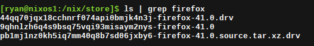
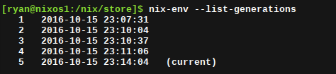

NixOS Part 1: Introduction to NixOS
If someone were to ask my what my top three interests in computing right now I think I would say (in no particular order): 1) Functional Programming and Languages 2) Linux Operating Systems and related technology, and lastly, 3) Large distributed computing systems (with an specific interest in build systems)
So, is there a project out there that contains bits of all three of my computing interests? Yes there is. And it is called NixOS.
I have followed NixOS for a few years now, playing with it off and on. I even had it installed as the main OS on my netbook for awhile. Recently, I have gotten the urge to once again scratch that itch... This time by seeing if I can install it on my main laptop, Alakazam.
The Nix package manager
Before diving into NixOS, it is probably a good idea to first take some time and explain the nix package manager. Nix is a purely functional package manager for Linux and Unix operating systems that aims to provide reliable and reproducable builds for users. It is considered a "purely functional" package manager because it treaks packages like values in a purely functional programming language (think Haskell). That is to say, packages are built by functions that don't have side-effects, and are immutable, meaning they don't ever change after being built.Functional Package Building

Nix packages are built using the Nix expressions, which is a simple pure, lazy, functional language (You can evel install a repl of it. Just use the nix command nix-env -i nix-repl to install it). A Nix expression describe everything that goes into building a package, and is a key part of allowing Nix packages to be deterministic. Nix stores built packages in something called the nix-store, which is maintained seperately from the system's package manager (unless the os is NixOS of course). This directory is commonly found at /nix/store/, but it can be installed elsewhere if desired. Each package in the nix store has it's own sub-directory with an obnoxiously long name. For example, you might see something similar to /nix/store/9qhnlzh6q4s9bsq75vqi93misaym2nys-firefox-41.0/. The random string of giberish in front of the package's name is actually a unique cryptographic hash of the build. Remember how I said nix is a functional package manager? When a package is built, all of its dependencies and versions are pumped through a hashing algorithm to create this unique identifier. In purley functional programming languages, a function takes and input and returns an output. Functions are not allowed to have side effects, so if the function is given the same input, it should always return the same output. Nix works the same why. If two packages are built with the exact same settings and dependencies, the resulting builds should be identical and have the same hash. However, if even a single dependency is a different version for one of the builds, the outputs are not considered identical (even if the functionality is the exact same), and the two builds will have different hashes as a result. The executable commands are then symlinked to the builds in the nix store so that the full hashed name isn't required. For example, instead of needing to launch the long name listed above,firefox is be linked to the package to make it easier.
Benefits of a Functional Package Manager
Complete Dependencies and Multiple User Support
Multiple Versions
BecauseAtomic Upgrades and Rollbacks
What is NixOS?
Why use a Declarative Functional Operating System?
